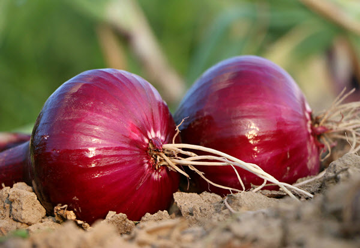
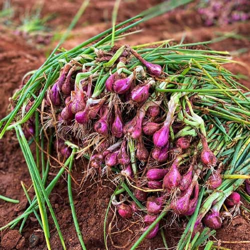

Type: Open Pollinated / Traditional
Where: Maharashtra, Gujarat, Karnataka, Tamil Nadu (Perambalur, Namakkal, Dindigul)
About: Medium to large bulbs, bright red skin, moderately pungent, good storage.

Type: Traditional / Local
Where: Mainly Tamil Nadu (Perambalur, Trichy, Salem, Erode, Namakkal)
About: Small reddish bulbs, sweet-aromatic flavor, shorter shelf life.